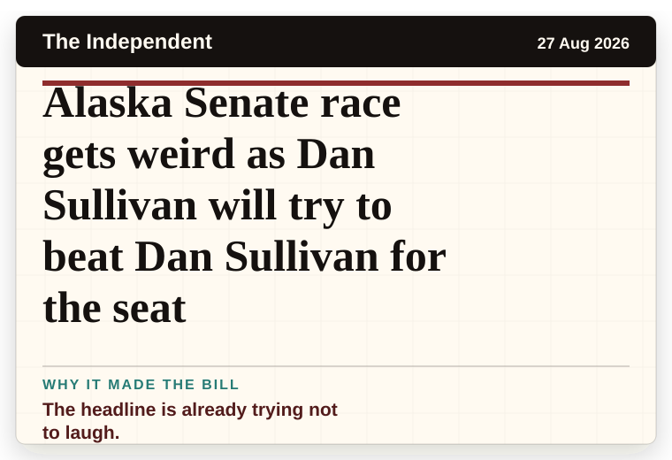
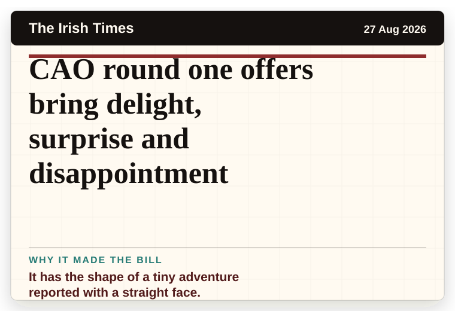
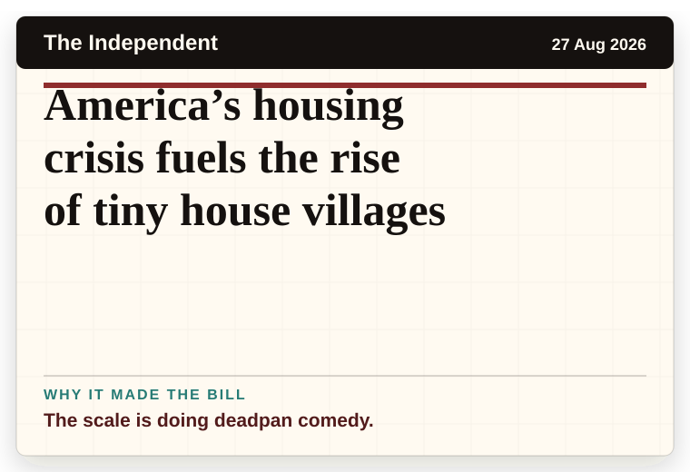

NT News
Australia
How to Lose a Guy in 10 Days sequel in the works
It reads like the setup to a very dry question.
The latest daily picks, linked back to the original sources. Search the room, pick a source, or follow a headline out to the full story.
Record updated: 27 Aug 2026, 08:29 AM AEST
Showing 11 headline candidates from the refresh run completed on 27 Aug 2026, 08:29 AM AEST.
It reads like the setup to a very dry question.

A wonderfully specific detail has taken centre stage.

It has the shape of a tiny adventure reported with a straight face.

A wonderfully specific detail has taken centre stage.

A wonderfully specific detail has taken centre stage.

It turns a small thing into a public argument.

The headline is already trying not to laugh.

A mystery is doing a lot of work in a very small sentence.

A wonderfully specific detail has taken centre stage.

It has the shape of a tiny adventure reported with a straight face.

The scale is doing deadpan comedy.